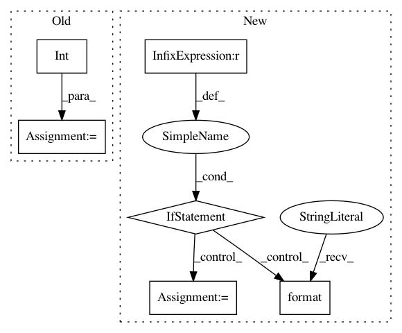

7dff214d9ba2bd178830d06422073022def49ba3,BinarySeach.py,,,#,25
Before Change
print("Enter numbers seprated by space")
s = input()
numbers = list(map(int, s.split()))
trgt =int( input("enter a single number to be found in the list "))
binarySearch(numbers, trgt)
After Change
return None
if __name__ == "__main__":
import sys
// For python 2.x and 3.x compatibility: 3.x has not raw_input builtin
// otherwise 2.x"s input builtin function is too "smart"
if sys.version_info.major < 3:
input_function = raw_input
else:
input_function = input
user_input = input_function("Enter numbers separated by coma:\n")
collection = [int(item) for item in user_input.split(",")]
target_input = input_function(
"Enter a single number to be found in the list:\n"
)
target = int(target_input)
result = binary_search(collection, target)
if result is not None:
print("{} found at positions: {}".format(target, result))
else:
print("Not found")
In pattern: SUPERPATTERN
Frequency: 3
Non-data size: 6
Instances
Project Name: TheAlgorithms/Python
Commit Name: 7dff214d9ba2bd178830d06422073022def49ba3
Time: 2016-07-29
Author: me@sergeytsaplin.com
File Name: BinarySeach.py
Class Name:
Method Name:
Project Name: DT42/BerryNet
Commit Name: 23d15da98ec99cf2b848f192c0763b55e1dbfc04
Time: 2020-02-15
Author: bofu@dt42.io
File Name: berrynet/client/camera.py
Class Name:
Method Name: main
Project Name: autorope/donkeycar
Commit Name: f9796d18c136fad0d06a720faf210c26aecf7ea5
Time: 2018-10-13
Author: liujiaming02@baidu.com
File Name: donkeycar/management/base.py
Class Name: CalibrateCar
Method Name: run